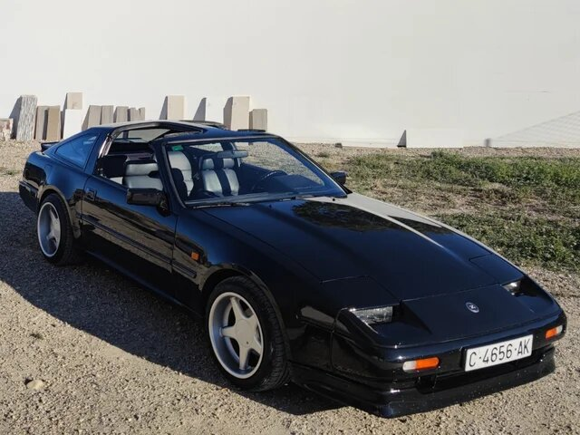

Mercedes-Benz R171 SLK
Madrid
167.500 KM
Excelente deportivo descapotable bien cuidado. Comprado en el año 1998 y usado solo para viajar a la playa.
Comprar
19.885€
Nissan 300ZX

Murcia
157.500 KM
Deportivo clásico japonés de 1988 muy cuidado. Posee aspiración turbo y neumáticos nuevos.
Comprar
25.000€
Fiat 500

Gerona
15.257 KM
Pequeño coche de gasolina Fiat 500 recién estrenado. Se vende por desuso.
Comprar
15.500€
Volkswagen Passat 1.9 TDI Variant
Murcia
167.500 KM
Vendo Volkswagen familiar de 2006 por razones económicas. Cuidado por una familia púdica, y no se ha fumado nunca dentro.
Comprar
15.000€
Volvo S40 1.9D
Madrid
93.000 KM
Sedán Volvo comprado en 2001 para ir a trabajar. ITV al día hasta noviembre de 2022 y neumáticos Michelín nuevos.
Comprar
13.500€
Mitsubishi Montero 2000
Madrid
246.000 KM
Todoterreno robusto usado por un granjero de la zona. Se vende por defunción del dueño.
Comprar
5.850€
Volvo XC90 T6
Madrid
163.042 KM
URGENTE. Comprado en 2005 y utilizado para viajes de empresa por Europa. Tiene cambio automático y siete plazas con asientos de cuero. Libro incluido.
Comprar
14.200€
Tesla Model S 2014

Valencia
7.391 KM
Se vende Tesla Model S por desuso. La mayor parte del tiempo estuvo en garage. ITV recién pasada.
Comprar
30.000€